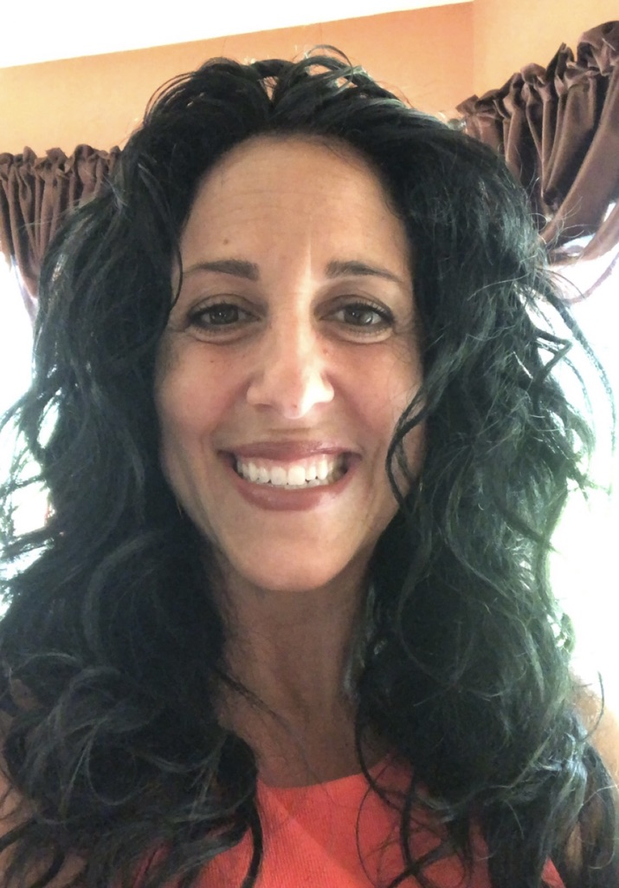

Leadership That Connects People, Programs, and Purpose.
Program Leadership | Learning & Development | Curriculum Strategy
I am a program and learning leader with experience building programs, managing teams, and leading initiatives that improve learning experiences and organizational processes. My background combines strategic planning, program operations, curriculum development, and learning technology.
Throughout my career, I have led the development and launch of online programs, managed faculty and program operations, and worked across departments to solve challenges and implement improvements. I believe strong leadership means setting clear goals, supporting people, and making informed decisions that lead to results.
What sets me apart is my ability to see the bigger picture while understanding the details required to make it happen. I can lead a program from concept to implementation, guide teams through change, and use my instructional design background to develop practical solutions.

My Professional Background
My experience includes leading the development and launch of online programs in UX/UI Design, Graphic Design, and Web Design, as well as overseeing curriculum improvements, learning assessments, faculty support, and student success.
I have worked across the full program lifecycle, from planning and implementation through evaluation and continuous improvement. I use learning analytics, stakeholder feedback, and industry expectations to guide decisions and improve outcomes.
My Leadership Approach
I take a collaborative, practical approach to leadership. I focus on understanding organizational goals, bringing the right people together, identifying challenges, and developing solutions that work. I value clear communication, accountability, professional growth, and continuous improvement.